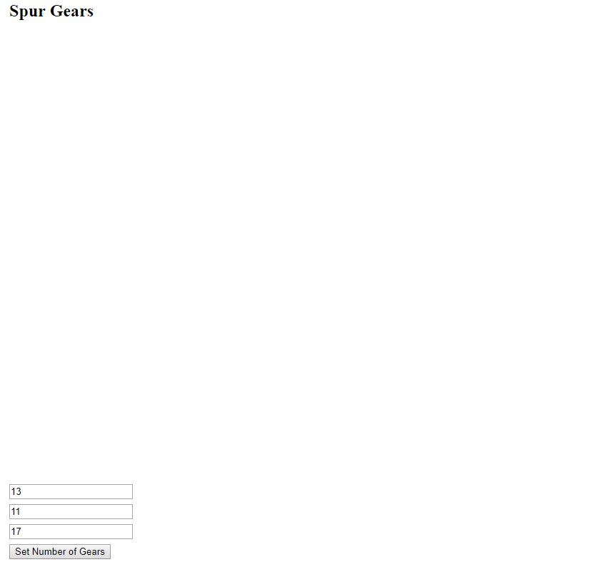
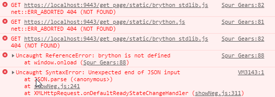
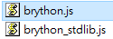
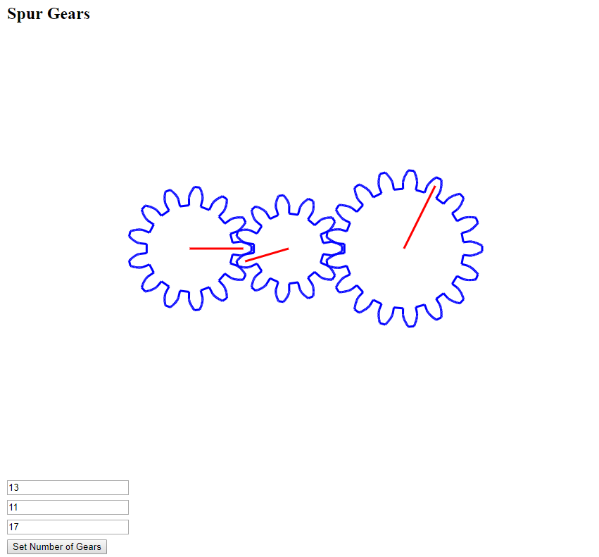

解決問題 << Previous Next >> 使用者自檢
解決問題 << Previous Next >> 使用者自檢
解決canvas無法顯示
解決 canvas 無法顯示

解決方式一：
- 先在有問題的頁面下按 F12 來檢查頁面問題
- 若有出現

- 執行 python wsgi.py 進行動態編輯
- 到有問題頁面進行編輯
- 在Source code 的狀態底下將
<script src="/get_page/static/brython.js"></script> <script src="/get_page/static/brython_stdlib.js"></script>
將/get_pageg 刪除，變成底下的路徑
<script src="./../static/brython.js"></script> <script src="./../static/brython_stdlib.js"></script>
- 原因：無法正確讀取到 brython
解決方式二：
- 先在有問題的頁面下按 F12 來檢查頁面問題
- 若有出現
- 到倉儲下的 static 資料夾裡檢查是否有

- 原因：沒有 brython 的檔案因此無法讀取到 brython
解決方法三：
- 在 Y 槽 python launchLeo.py

用 python 執行![]()
- 開啟 CMSimfly.leo
- 找到編輯flaskapp.py 底下的 savePage 和 ssavePage，找到
page_content = request.form['page_content'] # when element_format : "html", need to remove the annoying comment to prevent brython exec在後面加入
page_content = page_content.replace('// <![CDATA[', '') page_content = page_content.replace('// ]]>', '')之後就可正常顯示 canvas
- 原因：<![CDATA[ ]]> 的 tag 在 XML 執行程式的語法，但網頁轉為靜態後是 HTML ,因此在 <![CDATA[ ]]> 的 tag 前的斜線會變成註解，導致無法執行程式，所以在轉換成靜態的時候把 <![CDATA[ ]]> 替換成空字串，就可以順利執行程式

解決問題 << Previous Next >> 使用者自檢